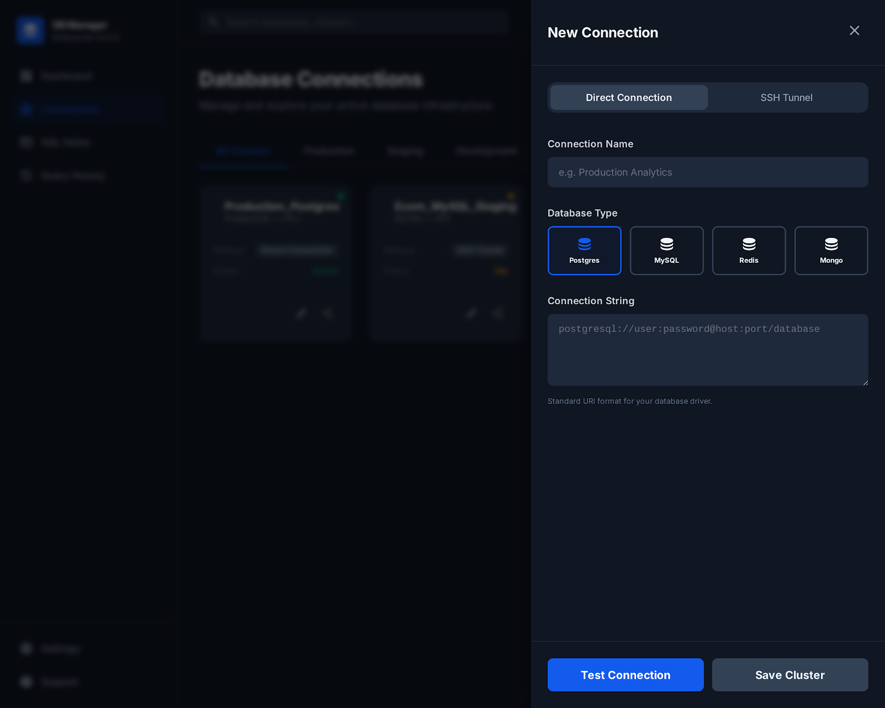
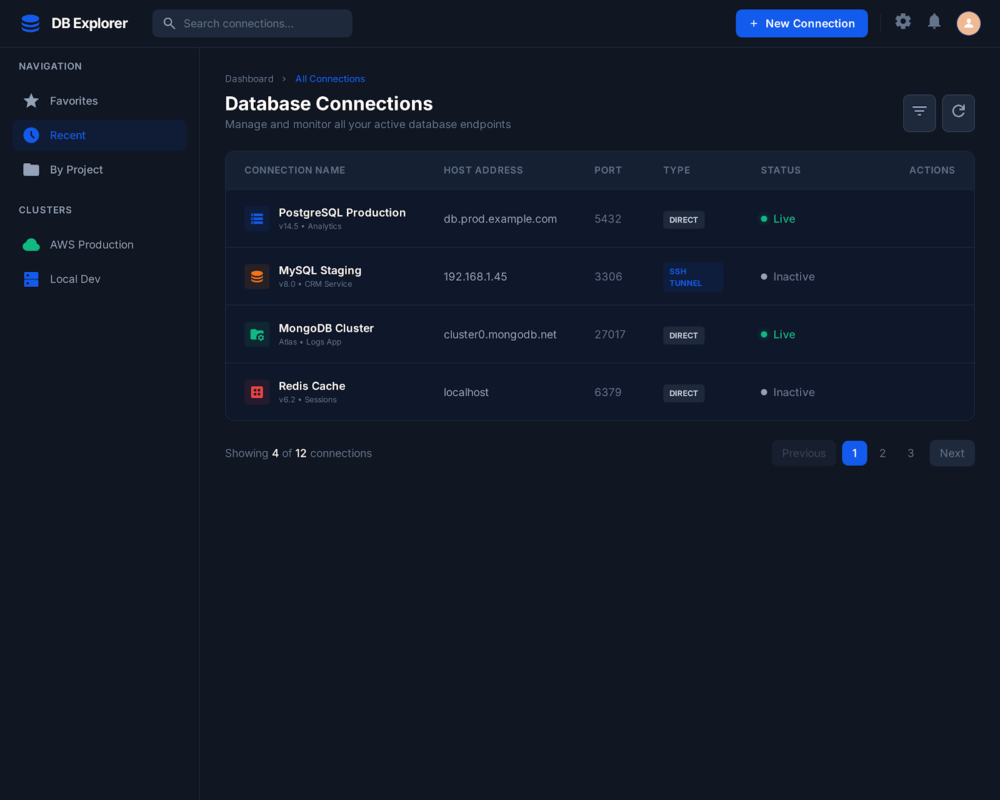
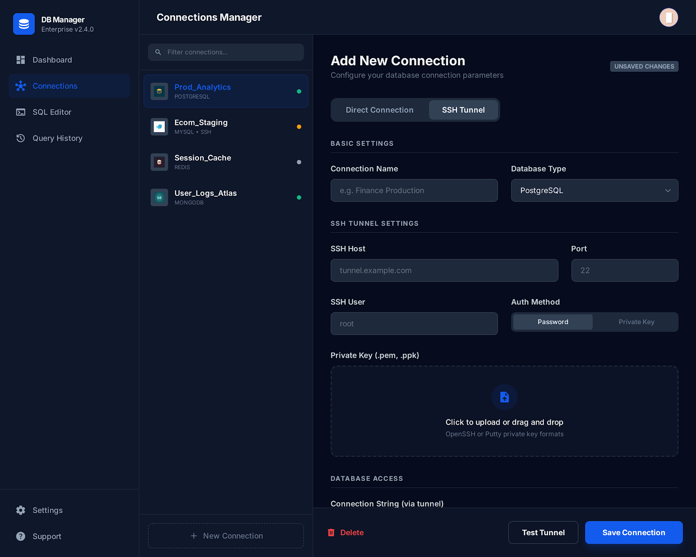
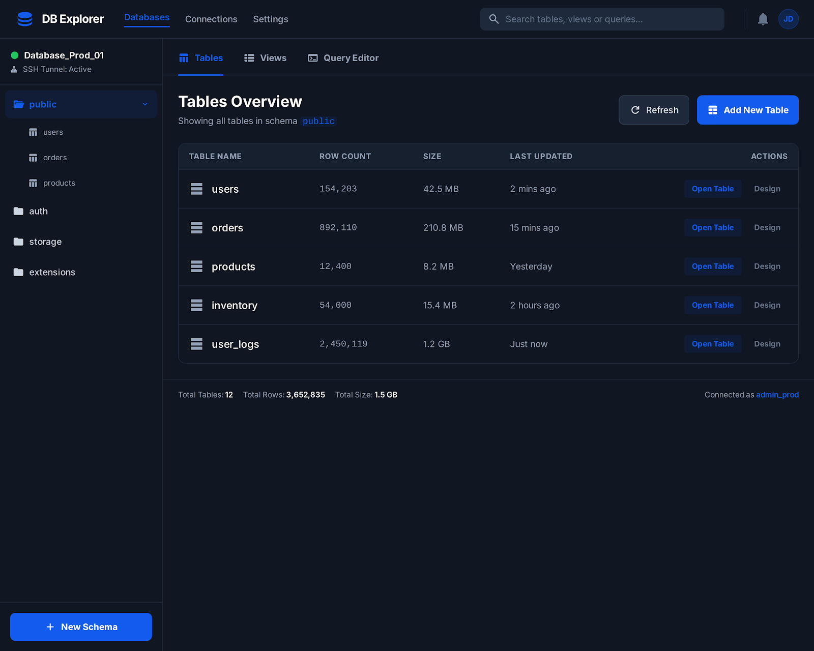
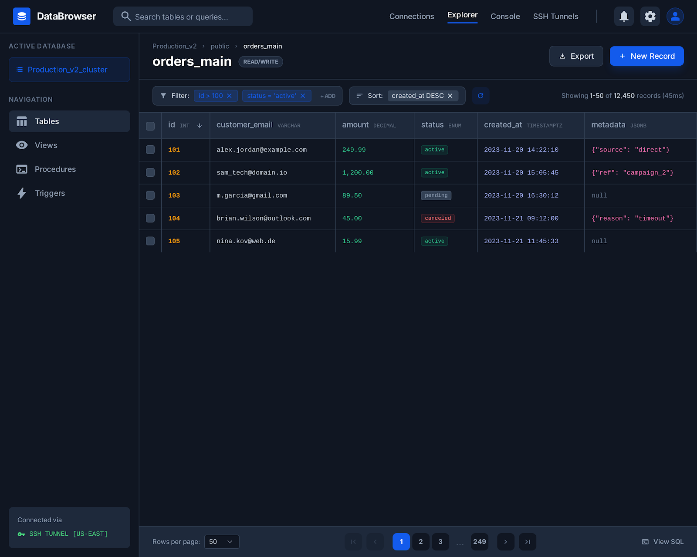
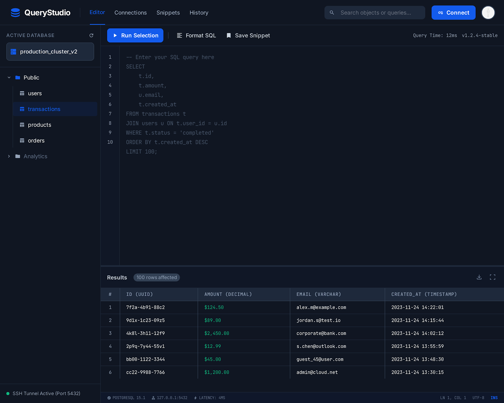

Linux (.deb)
Ubuntu / Linux Mint / Debian (amd64)
Download Linux Packagesudo dpkg -i puppy-db-tool_0.1.1_amd64.deb
sudo apt -f install -y
puppy-db-tool
Connect to MySQL, PostgreSQL, MongoDB, and Redis. Use direct connection or SSH tunnel, browse tables, edit rows, and run queries from a modern dark UI.
Ubuntu / Linux Mint / Debian (amd64)
Download Linux PackageWindows 10/11 (x64)
Download Windows EXE




